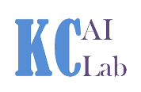

Welcome to KC AI Lab
What is the experience that a client can expect?
- Agile methodology at the core while in development. A suitable project management model is picked that is most effective for the slated business objectives of the project.
- Checkpoints with the client take place throughout the project life in a frequency determined by the client (every 2-4 weeks is typical)
- Frequent discussions take place throughout the project to refine the use-case and align the outcomes with the new client actions that they will take because of the project.
What are the outcomes a client can expect?
- A full report on the original project goals and which are met, and if not met a detailed explanation why the original goal was impossible and what can be done to make it possible in the future.
- Clear and defined actions for the client to take that reflect the original project goals.
What makes the KC AI Lab successful in managing a project?
- The development of each project is led by an experienced machine learning engineer.
- Process standards have been built and refined through multiple projects and are followed closely to deliver consistent outcomes.
- We work together as a cohesive group on each project and combine ideas to give the most robust solution possible. We integrate closely via powerful collaboration tools like Slack to stay on top of things & be more productive.
- Data scientists constantly share ideas for improvements and optimizations which are key for success while working on machine learning modules.
How we incorporated these principles into the KSU Malaria Project?
- The KSU Malaria Research project currently underway is a great example of how we as an organization follow processes and standards during the development phase of a project while also combine ideas from multiple data scientists.
- An overview of the project background and how we are executing the project in all these aspects is described below.